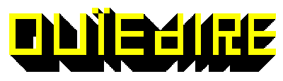

j'en ai déjà entendu parler quelque part
01 / Bozoo & Valkiri
- Alteration Auditive (Juin 2007)
Doddodo
- Heresy Country Papa
Candie Hank
- J'adore Whiskey
Groupgris
- Return Ktsk
Lesbians On Ecstasy
- Ving
Bruno & Michel Are Smiling
- Faith
Computer Truck
- Cracovian Scene (Feat Yan From Ben et Béné)
Monster X
- X6
Toxic Lipstick
- Mumz Not Home
Xerak
- Untitled
Brezel goring
- Chez Le Dentiste
Helgoland
- Sincerely Yows
Orange Zebre
- Judikael Goodvibes
Kevin Blechdom
- Bucktoof Rebound
Test Tube Kids
- Untitled
Melodik Pinpon
- La Tension Montait Dans Le Trome
Aavikko
- Sports Criminal
Ben Et bene
- Dorrie
Sexy Sushi
- Hibernatus
Felix Kubin
- I Hate Art Galleries
Goto80
- Cpwillys
Votre navigateur n'est pas compatible